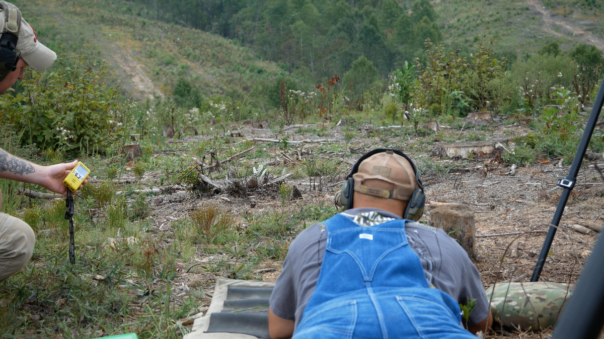
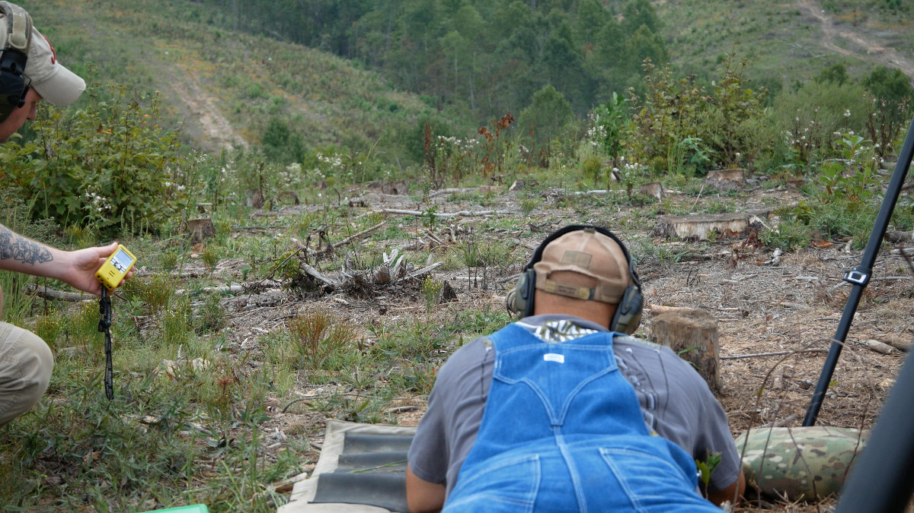

About
The Virginia Precision Rifle Club was formed to promote precision rifle shooting as a sport in Virginia. We intend to hold monthly club matches, promote the sport, encourage responsible firearms ownership, and help new shooters get started.
Matches are geared to be both challenging for seasoned shooters but not overwhelming for those with less experience. We encourage a friendly atmosphere where competitors are willing to help out those with less experience during a match. If you are new to the sport, don't be afraid to come out and join us!
Our next match is on November 27th, 2016. Check out the Matches/Results page for more details.